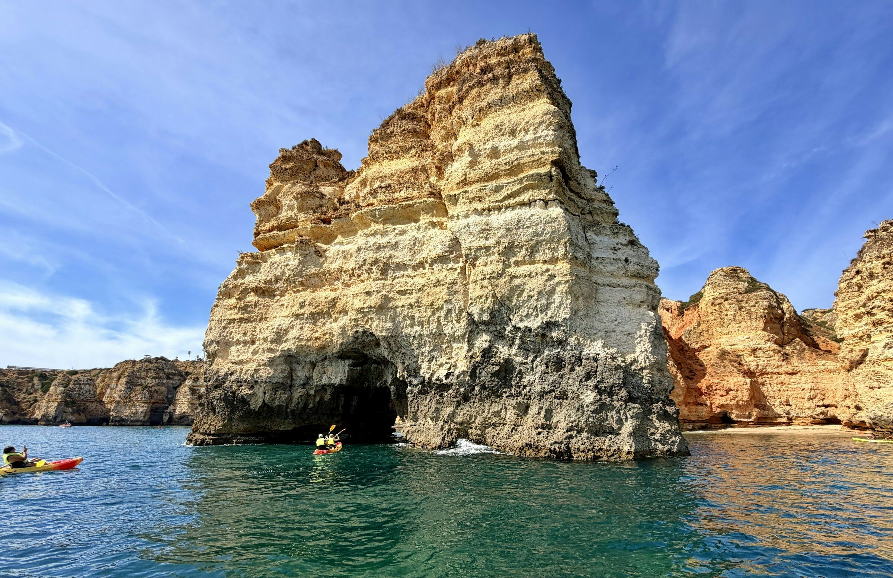
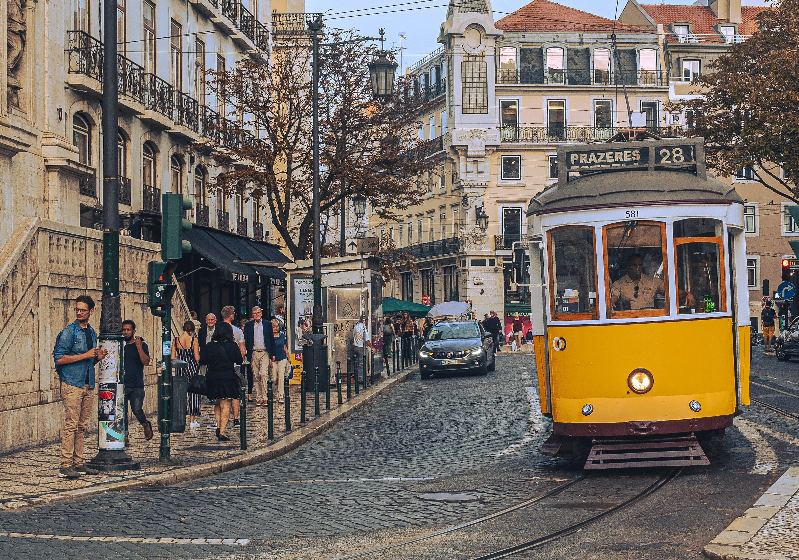
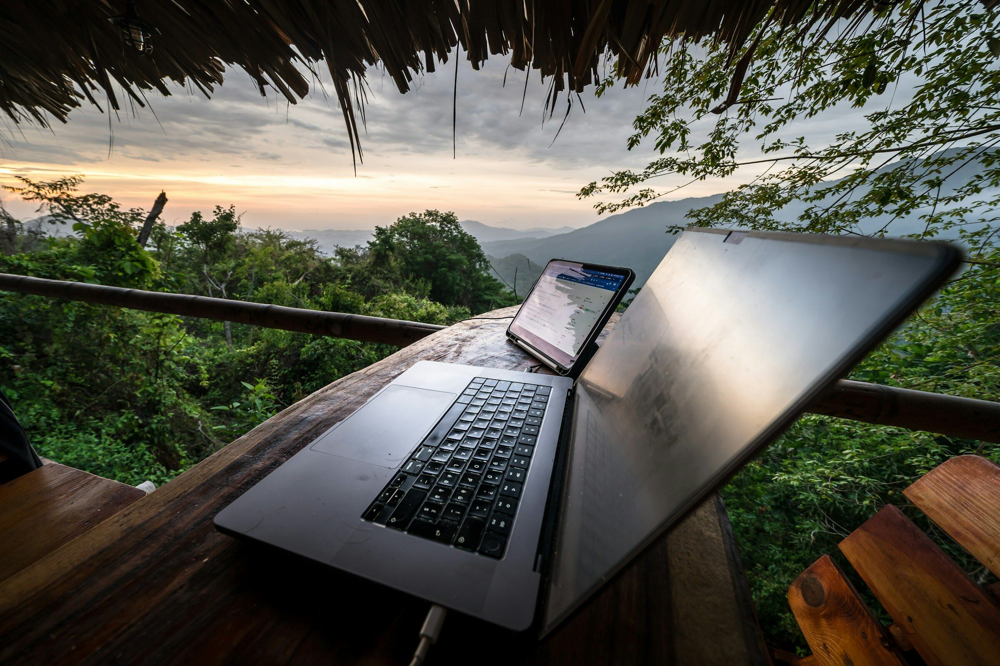

Portugal for Company Retreats: Lisbon, Algarve, Ericeira, Porto
Why Portugal is Europe's favourite retreat destination, and how to choose between Lisbon, the Algarve, Ericeira, Porto, the Douro, Madeira and the Azores.

We are based in Portugal, so we may be biased, but there are good reasons why so many teams choose it for their retreat: short flights from most of Europe, sunshine for much of the year, excellent food, warm hospitality and great value compared with many neighbours.
The bigger question is: which part of Portugal?
Lisbon: the all-rounder
Lisbon gives you city energy and the ocean in one place. Workshops in a palace or a rooftop space, a tram ride through Alfama, a pastel de nata workshop, sunset sailing on the Tagus, and the beaches of Cascais 30 minutes away.
- Best for: groups of any size, mixed teams, first retreats.
- Flights: direct from almost every European city.
- When: all year; spring and autumn are perfect.
Discover Lisbon for company retreats.

The Algarve: sun, cliffs and quintas
The south coast is famous for its golden cliffs and coves. Teams love boat trips to the sea caves, kayaking, e-bike rides through the countryside, cooking classes and long dinners by the sea. Venues range from boutique hotels to private quintas booked exclusively.
- Best for: retreats mixing work and outdoor time, incentive trips.
- Flights: Faro has direct flights from most European cities.
- When: March to November.
Ericeira: surf and startup energy
A fishing village turned World Surfing Reserve, 45 minutes from Lisbon airport. Mornings in the water with instructors, workshops in the afternoon, grilled fish in the harbour in the evening. Perfect for tech and creative teams.
- Best for: startups, remote teams, groups of 10 to 60.
- When: April to October for beginners.
Discover Ericeira · Surf retreats for teams.
Porto and the Douro Valley
Porto is full of character: river views, tiles, a lively food scene. An hour inland, the Douro Valley offers wine estates where teams can stay, work and join a guided tasting in the vineyards.
- Best for: leadership retreats, value-conscious teams, autumn harvest trips.
Madeira and the Azores
For teams who want nature above all: volcanic landscapes, levada walks, whale watching, hot springs. Both islands are mild all year, making them good winter options.
What a 3-day Portugal retreat can look like
Day 1: arrive in Lisbon by early afternoon, opening session, welcome dinner in Alfama. Day 2: morning workshops, afternoon treasure hunt through the city, sunset sailing. Day 3: transfer to Ericeira for a surf lesson, closing lunch by the ocean, departures.
Budget
Portugal remains good value. For three nights with flights included, most teams spend between €1,100 and €2,000 per person depending on season and venue. Try the budget calculator for your numbers.
Plan it with a local team
We live here, we know the venues and we book every participant's flight. Talk to our expert to get 3 proposals for your Portugal retreat.
Frequently asked questions
Where is the best place in Portugal for a company retreat?
Lisbon for an all-round city and coast experience, the Algarve for sun and outdoor activities, Ericeira for surf, and the Douro for calm leadership retreats.
When is the best time for a team retreat in Portugal?
April to June and September to October offer warm weather, fewer crowds and better prices than July and August.
Is Portugal expensive for a corporate retreat?
Portugal offers excellent value compared with France, Italy or Switzerland, with comparable quality venues and food.
Let's plan your team's next retreat
Venue, programme, activities and every participant's flight, handled by one team. It starts with a call with our expert.
Keep reading
All articles
The Best Company Retreat Destinations in Europe
The best destinations in Europe for a company retreat or offsite, by type of team and budget: sun, surf, culture, nature and great value, with flight tips.

How Much Does a Company Retreat Cost Per Person in Europe?
Real cost ranges for a company retreat in Europe, per person and flights included: venue, meals, activities, transfers, plus the hidden costs most budgets miss.

Surf Retreats for Teams: Ericeira, Taghazout and Beyond
Why surf retreats work so well for teams, the best surf destinations for company offsites, how to mix lessons with workshops, and what beginners should know.